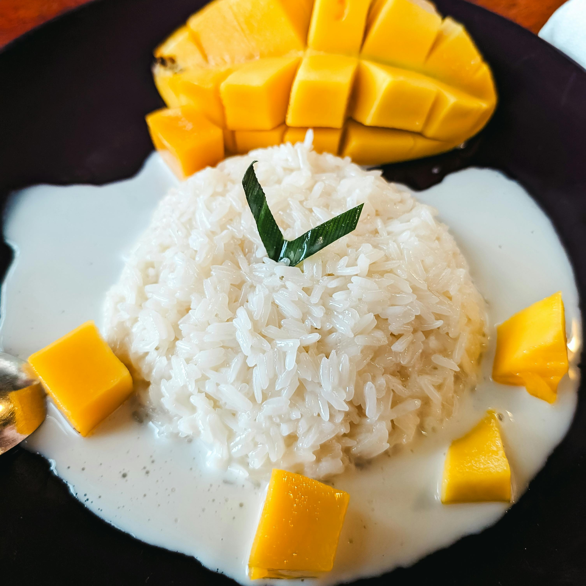

ODIN RECIPES ▸ KHAO NEEO MAMUANG
KHAO NEEO MAMUANG (Thai Sweet Sticky Rice With Mango)
Prep Time: 10 mins | Cook Time: 20 mins | Additional Time: 1 hr | Total
Time: 1 hr 30 mins | Servings: 4 | Yield: 3 cups

Photo by Markus Winkler from Pexels
DESCRIPTION
This mango sticky rice is a wonderful and authentic-tasting Thai dessert
that's as good, if not better, than what you find in many Thai
restaurants.
This recipe is by Michelle from Allrecipes.
INGREDIENTS
- 2 cups water
- 1 ½ cups uncooked glutinous sticky white rice, rinsed
- 2 cups coconut milk, divided
- 1 cup white sugar, or to taste
- ¾ teaspoon salt, divided
- 1 tablespoon white sugar, or to taste
- 1 teaspoon tapioca starch
- 3 mangos, peeled and sliced
- 1 tablespoon toasted sesame seeds
STEPS
- Gather all ingredients.
-
Combine water and rice in a saucepan. Bring to a boil, cover, and reduce
heat to low. Simmer until water is absorbed, 15 to 20 minutes.
-
While the rice is cooking, combine 1 ½ cups coconut milk, 1 cup sugar,
and 1/2 teaspoon salt in another saucepan. Bring to a boil over medium
heat; remove from the heat and set aside.
-
Stir cooked rice into coconut milk mixture. Cover and allow to cool for
1 hour.
-
Make a sauce by combining 1/2 cup coconut milk, 1 tablespoon sugar, 1/4
teaspoon salt, and tapioca starch in another saucepan; bring to a boil.
Cook and stir just until thickened.
-
Place coconut rice on a serving dish and arrange mangos on top. Pour
sauce over mangos and rice.
- Sprinkle with sesame seeds.